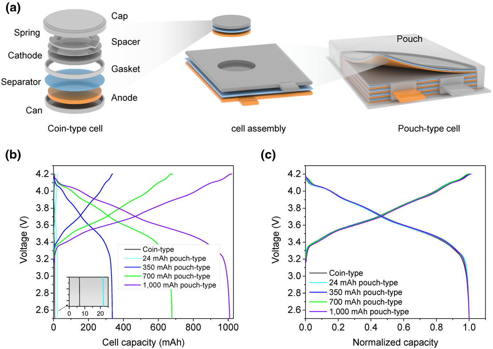
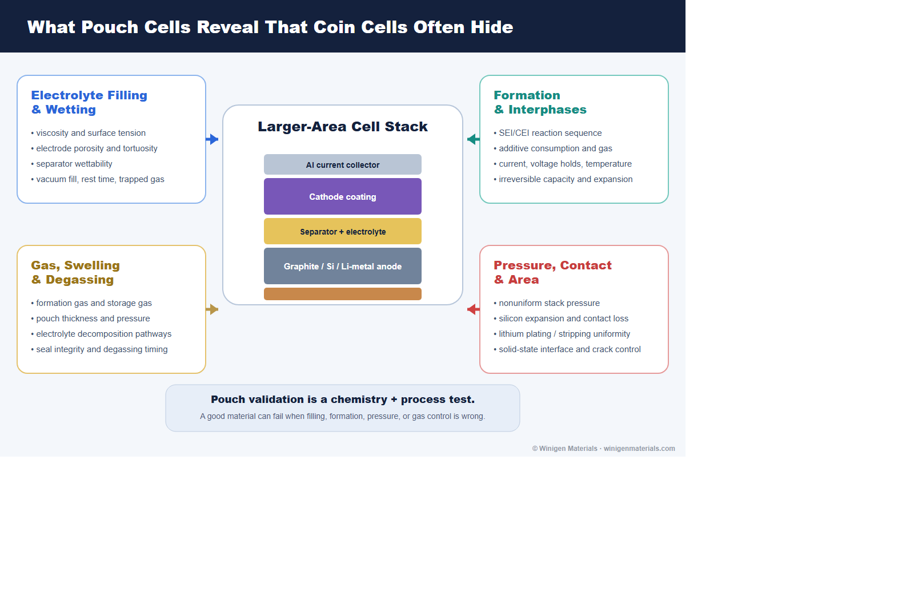
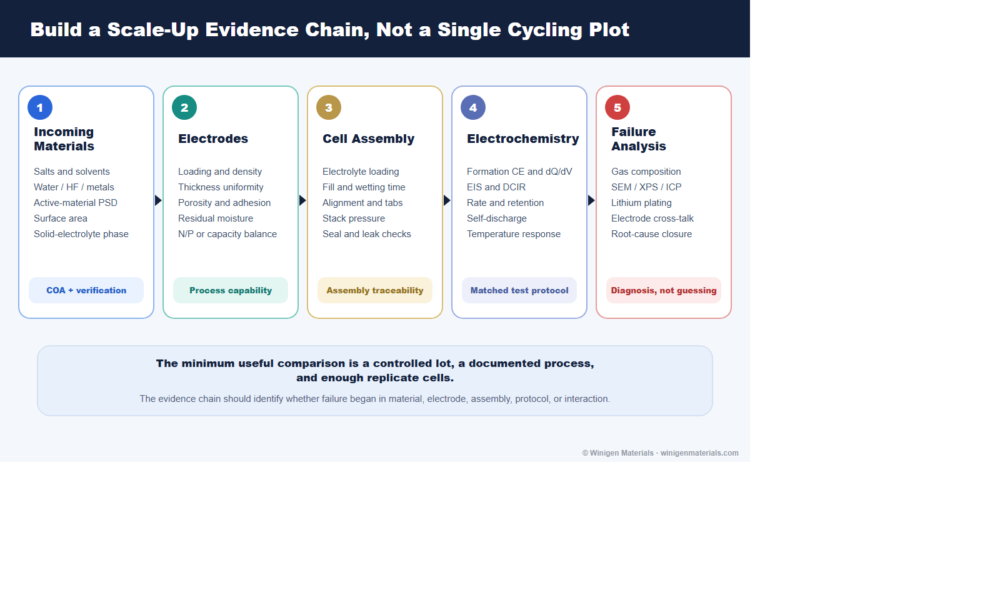

Battery materials are often selected from coin-cell capacity, retention, or rate data. Those tests are valuable because they use little material, support fast comparisons, and isolate early electrochemical behavior. They are not, however, a miniature proof of pouch-cell manufacturability.
When a program moves into larger-area cells, the question changes. The team is no longer asking only whether a salt, solvent, additive, active material, or solid electrolyte can work. It is asking whether the complete materials system can be filled, wetted, formed, compressed, degassed, sealed, cycled, and reproduced under practical constraints.

Why Coin Cells Are Useful but Incomplete
Coin cells remain excellent tools for screening active-material capacity, first-cycle loss, electrolyte compatibility, additive ranking, and early rate or cycling trends. Half-cells can reveal whether a cathode or anode is electrochemically accessible. Coin full-cells can then test N/P balance, voltage-window compatibility, electrode cross-talk, and formation response with modest material demand.
The limitation is not that coin-cell data are inherently bad. The limitation is that cell hardware contributes its own pressure, contact resistance, electrolyte excess, gas volume, current path, and thermal environment. Research-cell reviews therefore recommend choosing the cell format according to the question being asked and avoiding claims that exceed what the fixture can establish.[2]
Son and co-workers provided a particularly clear format comparison using the same NCA cathode, graphite anode, electrolyte, loading, calendaring, and electrochemical conditions in approximately 7 mAh coin cells and pouch cells ranging from 24 to about 1000 mAh.[1] The normalized second-cycle voltage profiles were closely aligned, yet impedance, rate performance, aging, and lithium-plating behavior differed strongly with format.

What Changes When the Cell Becomes a Pouch
| Variable | Coin-cell tendency | Pouch-cell question |
|---|---|---|
| Electrode area | Small and mechanically constrained | Are coating, current density, and pressure uniform across a larger area? |
| Electrolyte amount | Often generous relative to active capacity | Does the formulation work at a practical electrolyte-to-capacity ratio? |
| Gas accommodation | Headspace and rigid hardware can mask swelling | How much gas forms, when does it form, and can degassing control it? |
| Pressure | Spring and spacer impose local compression | Is external pressure uniform, controlled, and appropriate for the chemistry? |
| Current collection | Short paths through compact hardware | Do tabs and larger current paths create gradients or excess polarization? |
| Drying and handling | Small components are easier to dry and assemble | Are residual moisture and exposure controlled throughout electrode and pouch processing? |
| Formation | Gas and dimensional change may be difficult to observe | How do SEI/CEI growth, gas, expansion, holds, and degassing interact? |
Best-practice guidance for lithium battery experiments emphasizes controlled electrode preparation, drying, electrolyte quantity, assembly, formation, environmental conditions, replicates, and transparent reporting.[3] These controls become more, not less, important when cell size increases.
Electrolyte Filling and Wetting Are Material-Dependent
In a pouch cell, electrolyte must penetrate the separator and porous electrodes over a much larger area. Saturation depends on pore-size distribution, porosity, tortuosity, particle morphology, binder distribution, surface chemistry, viscosity, surface tension, vacuum conditions, fill sequence, and rest time. Pore-scale modeling shows why filling cannot be reduced to a single solvent property: local pore geometry and wetting behavior determine where liquid advances and where gas can remain trapped.[4]
This matters commercially because changing a lithium salt, solvent blend, or additive package can alter viscosity, conductivity, surface tension, gas behavior, and interphase kinetics at the same time. A formulation that ranks well in a flooded coin cell can underperform when electrolyte loading is reduced or wetting time is shortened.

Formation Is a Materials and Process Step
Formation is not simply the first charge-discharge cycle. It controls early SEI and CEI growth, additive consumption, irreversible lithium loss, gas evolution, impedance, and dimensional change. Modeling of a 2.5 Ah pouch cell has shown how formation current and voltage history couple to multi-species SEI reactions, additive depletion, and irreversible expansion.[7]
For practical validation, compare formation protocols rather than inheriting one from a coin-cell routine. Current, upper-voltage holds, temperature, rest steps, pressure, and degassing timing should be matched to the chemistry. FEC- or VC-containing silicon formulations, high-voltage CEI additives, LiFSI-containing electrolytes, and lithium-metal systems can consume additives and generate interphases at different rates.
Useful formation evidence includes first-cycle coulombic efficiency, charge consumed in voltage regions associated with reduction or oxidation, dQ/dV, EIS before and after formation, gas or thickness change, and recovery after degassing. The goal is not the shortest formation schedule; it is the shortest schedule that builds the intended interphases reproducibly without hiding early failure.
Gas and Swelling Become Visible Engineering Variables
Pouch cells make gas generation measurable through thickness, pressure, visual swelling, displaced volume, and degassing mass. Gas can originate from residual moisture, electrolyte reduction or oxidation, additive reactions, cathode surface chemistry, overcharge, storage, and thermal reactions. Reviews of pouch-cell gas behavior emphasize that swelling is both an electrochemical signal and a mechanical reliability problem.[5]
Coin-cell capacity retention alone may therefore miss a commercially important failure mode. For additive and solvent screens, pair electrochemical data with pouch thickness, gas volume or composition where available, seal integrity, storage state of charge, temperature, and degassing history. A formulation that retains capacity but develops unacceptable gas is not ready for scale-up.
Pressure and Contact Depend on the Material System
Pressure is not a universal setting. Conventional graphite cells, silicon-rich anodes, lithium metal, solid-state electrolytes, and solid-liquid hybrid architectures respond differently.
| Material system | Scale-up risk | Validation priority |
|---|---|---|
| Graphite / liquid electrolyte | Tab and current-path gradients; gas; wetting; local lithium plating under aggressive charge | DCIR/EIS, rate map, low-temperature charging, swelling, and post-mortem anode inspection |
| Silicon or SiOx/graphite | Irreversible expansion, recurring volume change, SEI consumption, contact loss, gas | Thickness evolution, pressure, formation loss, additive consumption, EIS, and cycle-to-cycle expansion |
| Lithium metal | Nonuniform plating/stripping, void formation, edge effects, electrolyte depletion, pressure sensitivity | Pressure-distribution mapping, areal capacity, electrolyte loading, Coulombic efficiency, short-circuit diagnostics |
| Solid-state / hybrid | Solid-solid contact loss, cracking, densification gradients, interface impedance | Defined pressure, layer density, mechanical integrity, EIS evolution, cross-section and interface analysis |
| High-voltage cathodes | Electrolyte oxidation, gas, transition-metal dissolution, CEI growth, aluminum compatibility | High-voltage storage, gas, impedance, ICP, anode deposition, and pouch swelling |
In high-energy lithium-metal pouch cells, external pressure can improve contact and cycling, but excessive or nonuniform pressure can also reshape failure. Published pouch-cell work therefore treats pressure as a measured process variable rather than an unspecified clamp condition.[6]
Cell Format Changes Impedance and Its Interpretation
In the matched-format study by Son et al., the high-frequency series resistance was 6.227 ohm for the coin cell and 0.025 ohm for the 1 Ah pouch cell; the combined SEI and charge-transfer semicircle contribution was 11.84 and 0.05 ohm, respectively.[1] The authors showed that much of the resistance difference can be understood through electrode area and parallel reaction pathways, while extra coin-cell hardware can add contact resistance.
The practical lesson is not that pouch cells are always intrinsically better. It is that raw resistance in ohms cannot be compared casually between cell sizes. Report electrode area, capacity, loading, state of charge, temperature, perturbation amplitude, and normalization method. Then connect impedance to the actual performance question: polarization, power, heat, lithium plating, or degradation.

What to Measure Before Scale-Up
A credible pouch-cell program needs an evidence chain that links incoming materials to electrode process, assembly, electrochemistry, and failure analysis. Scale-up reviews consistently identify reproducibility, material quantity, process compatibility, and the gap between laboratory demonstrations and manufacturing constraints as central challenges.[8]

| Evidence group | Minimum useful measurements | What it helps diagnose |
|---|---|---|
| Electrochemical | Formation efficiency, long-term CE, capacity retention, EIS, DCIR, rate, leakage current, self-discharge | Transport, interphase growth, polarization, internal shorts, and aging rate |
| Physical | Electrode loading/thickness, pouch thickness, swelling, pressure, wetting, electrolyte uptake, temperature | Process uniformity, gas, expansion, contact loss, and thermal gradients |
| Chemical | Water/HF, ICP, XPS, GC-MS, gas composition, residual lithium, additive consumption | Contamination, cross-talk, electrolyte decomposition, and interphase chemistry |
| Structural | SEM, XRD, particle-size distribution, porosity, adhesion, cross-sectional imaging | Phase change, cracking, morphology, coating defects, and interface failure |
| Statistical | Replicate cells, lot tracking, control charts, yield, mean and spread | Whether an apparent improvement is reproducible and manufacturable |
A Practical Development Sequence
- Define the application and failure mode. Set voltage, temperature, rate, areal capacity, cycle-life, gas, swelling, safety, and cost targets.
- Qualify incoming materials. Confirm salt and solvent water, additive purity, active-material particle properties, and solid-electrolyte phase or conductivity.
- Screen efficiently in coin cells. Use half-cells for material potential and full-cells for electrode pairing, N/P balance, formation, and cross-talk.
- Freeze a controlled baseline. Lock electrode loading, density, separator, electrolyte amount, formation, temperature, and replicate count before comparing candidates.
- Move to single-layer pouch cells early enough. Expose wetting, gas, seal, pressure, tab, and area-dependent behavior before consuming pilot-scale material.
- Diagnose rather than merely rank. Connect retention and impedance to swelling, gas, post-mortem surfaces, and process history.
- Advance to multilayer cells only after the process window is visible. Confirm repeatability across batches, operators, positions, and formation channels.
Winigen Materials Perspective
Battery-material validation works best when sourcing and screening strategy are connected. A lithium salt should be selected with its solvent system, water limit, aluminum compatibility, and intended voltage window in mind. An additive package should be assessed through formation, gas, impedance, and electrode cross-talk. A silicon or lithium-metal anode should be paired with realistic loading, electrolyte quantity, pressure, and formation. A solid-state material should be assessed through particle size, density, conductivity, interface contact, and mechanical processing.
Winigen Materials supports this work with battery-grade lithium salts, low-moisture solvents, electrolyte additives, cathode and anode active materials, lithium metal foil on copper, solid-state electrolytes, and custom formulation support.
The objective is not to replace the customer's cell-development team. It is to make material down-selection, specification review, formulation planning, and R&D-to-pilot translation more coherent.
Discuss Your Validation Program
Share your cell chemistry, electrode loading, electrolyte system, target format, operating window, and current failure mode. Winigen can help identify relevant materials and a practical screening sequence.
Contact Winigen MaterialsReferences
- Son, Y. et al. Analysis of Differences in Electrochemical Performance Between Coin and Pouch Cells for Lithium-Ion Battery Applications. Energy & Environmental Materials (2023). CC BY 4.0.
- Smith, A. et al. Potential and Limitations of Research Battery Cell Types for Electrochemical Data Acquisition. Batteries & Supercaps (2023).
- Dai, F.; Cai, M. Best practices in lithium battery cell preparation and evaluation. Communications Materials 3, 64 (2022).
- Lautenschlaeger, M. P. et al. Understanding Electrolyte Filling of Lithium-Ion Battery Electrodes on the Pore Scale Using the Lattice Boltzmann Method. Batteries & Supercaps (2022).
- Aalund, R.; Endreddy, B.; Pecht, M. How Gas Generates in Pouch Cells and Affects Consumer Products. Frontiers in Chemical Engineering 4 (2022).
- Kang, D. et al. External-pressure-induced performance enhancement of high-energy-density Li-metal-pouch cells (2023).
- Weng, A. et al. Modeling Battery Formation: Boosted SEI Growth, Multi-Species Reactions, and Irreversible Expansion. Journal of The Electrochemical Society 170, 090513 (2023).
- Cao, Y. et al. Bridging the academic and industrial metrics for next-generation practical batteries. Nature Nanotechnology 14, 200-207 (2019).
All original diagrams on this page are © Winigen Materials unless otherwise noted. They may not be reproduced, modified, or redistributed without permission.